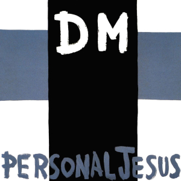
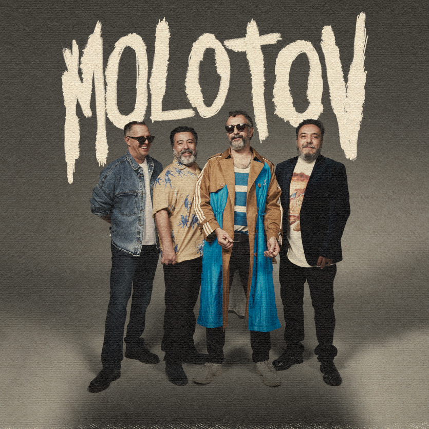

Unforgettable

Unforgettable thats what you are…
Unforgettable though near or far…
Like a song of love that clings to me
how the thought of you does things to me
never before has someone been more
Unforgettable in every way
and forever more (and forever more)
thats how you'll stay (thats how you'll stay)
thats why darling its incredible
that someone so unforgettable
thinks that i am unforgettable too
*music break*
No never before
Has someone been more
ooo unforgettable (unforgettable)
in every way (in every way)
and forever more (and forever more)
thats how you'll stay (thats how you'll stay)
thats why darling its incredible
that someone so unforgettable
thinks that i am unforgettable too.
Volver a la lista de canciones
Fly me to the moon
Fly me to the moon
Let me play among the stars
And let me see what spring is like on
A-Jupiter and Mars
In other words
Hold my hand
In other words
Baby, kiss me
Fill my heart with song
And let me sing forever more
You are all I long for
All I worship and adore
In other words
Please, be true
In other words
I love you
Fill my heart with song
Let me sing forever more
You are all I long for
All I worship and adore
In other words
Please, be true
In other words
In other words
I love
You
Volver a la lista de canciones
Horse with no name

On the first part of the journey
I was looking at all the life
There were plants and birds and rocks and things
There was sand and hills and rings
The first thing I met was a fly with a buzz
And the sky with no clouds
The heat was hot and the ground was dry
But the air was full of sound
I've been through the desert on a horse with no name
It felt good to be out of the rain
In the desert you can't remember your name
'Cause there ain't no one for to give you no pain
La la la la la la…
After two days in the desert sun
My skin began to turn red
And after three days in the desert fun
I was looking at a river bed
And the story it told of a river that flowed
Made me sad to think it was dead
You see I've been through the desert on a horse with no name
It felt good to be out of the rain
In the desert you can't remember your name
'Cause there ain't no one for to give you no pain
La la la la la la…
After nine days I let the horse run free
'Cause the desert had turned to sea
There were plants and birds and rocks and things
There was sand and hills and rings
The ocean is a desert with its life underground
And a perfect disguise above
Under the cities lies a heart made of ground
But the humans will give no love
You see I've been through the desert on a horse with no name
It felt good to be out of the rain
In the desert you can't remember your name
'Cause there ain't no one for to give you no pain
La la la la la la…
Thank you all very much
Take care of yourselves, take care
Volver a la lista de canciones
Losing my religion

Oh life is bigger
It's bigger than you
And you are not me
The lengths that I will go to
The distance in your eyes
Oh no I've said too much
I set it up
That's me in the corner
That's me in the spot-light
Losing my religion
Trying to keep up with you
And I don't know if I can do it
Oh no I've said too much
I haven't said enough
I thought that I heard you laughing
I thought that I heard you sing
I think I thought I saw you try
Every whisper, of every waking hour
I'm choosing my confessions
Trying to keep an eye on you
Like a hurt, lost and blinded fool, fool
Oh no I've said too much
I set it up
Consider this
Consider this the hint of the century
Consider this the slip
That brought me to my knees, failed
What if all these fantasies come
Flailing around
Now I've said too much
I thought that I heard you laughing
I thought that I heard you sing
I think I thought I saw you try
But that was just a dream
That was just a dream
That's me in the corner
That's me in the spot-light
Losing my religion
Trying to keep up with you
And I don't know if I can do it
Oh no I've said too much
I haven't said enough
I thought that I heard you laughing
I thought that I heard you sing
I think I thought I saw you try
But that was just a dream
Try, cry, fly, try
That was just a dream
Just a dream
Just a dream, dream
Volver a la lista de canciones
Personal Jesus
Reach out, touch faith
Your own personal Jesus
Someone to hear your prayers
Someone who cares
Your own personal Jesus
Someone to hear your prayers
Someone who's there
Feeling unknown
And you're all alone
Flesh and bone
By the telephone
Lift up the receiver
I'll make you a believer
Take second best
Put me to the test
Things on your chest
You need to confess
I will deliver
You know I'm a forgiver
Reach out, touch faith
Reach out, touch faith
Your own personal Jesus
Someone to hear your prayers
Someone who cares
Your own personal Jesus
Someone to hear your prayers
Someone who's there
Feeling unknown
And you're all alone
Flesh and bone
By the telephone
Lift up the receiver
I'll make you a believer
I will deliver
You know I'm a forgiver
Reach out, touch faith
Your own personal Jesus
Reach out, touch faith
Reach out, touch faith
Reach out, touch faith
(Reach out, reach out)
Reach out, touch faith
Reach out and touch faith
Volver a la lista de canciones
Parásito
Subierón la mota, también el alcohol
Y ahora es más caro ponerse un pasón
Que le pasa muchacho, sigue borracho
Le apesta el hocico, hueles bien gacho
Gastas tu tiempo, todo tu dinero
Estás en la ruina por andar de culero
Todos trabajan y tu estás durmiendo
Y esperas la noche para estar bebiendo
Mientras invitas a todos las copas
Todas las chiquitas se quitan sus ropas
Su vieja me dijó que le eche la mano
Que no tiene chamba, tampoco su hermano
Óigame mi compa no la haga de pedo
Le digo las cosas y sigue de necio
Hey ya, ya tranquilo man (pinche huevón)
Eres un pará, un parásito
Hey ya, ya tranquilo man (pinche huevón)
Eres un pará, un parásito
Tranquilo mi hermano, no te pongas nervioso
Si no se te para fue por encajoso
No te preocupes que ya hay medicina
Si no se te quita te ponen vagina
Me pides prestado, me pagas mañana
Si no tiene varo me presta a su hermana
Tiene una deuda que debe millones
Tendrá que bajarse los pantalones
Óigame mi compa, ya está muy jodido
Yo quiero ayudarle pero no he podido
Metiste la pata donde no debías
Perdiste lo que tenías
Hey ya, ya tranquilo man (pinche huevón)
Eres un pará, un parásito
Hey ya, ya tranquilo man (pinche huevón)
Eres un pará, un parásito
Dicen que por la noches, no más se le iba en puro chupar
Dicen que no dormía, no más fumaba para aguantar
Ya ves, ya son las diez, como la ves? Listo pa la fiesta otravez
Si quieres yo me quedo, si quieres yo me quedo, para cuidar a tumujer
Hey ya, ya tranquilo man (pinche huevón)
Eres un pará, un parásito
Hey ya, ya tranquilo man (pinche huevón)
Eres un pará, un parásito
Hey ya, ya tranquilo man (pinche huevón)
Eres un pará, un parásito
Hey ya, ya tranquilo man (pinche huevón)
Eres un pará, un parásito
Hey ya, ya tranquilo man, hey ya, ya tranquilo man
Hey ya, ya tranquilo man, hey ya, ya tranquilo man
Hey ya, ya tranquilo man (pinche huevón)
Eres un pará, un parásito
Hey ya, ya tranquilo man (pinche huevón)
Eres un pará, un parásito
Volver a la lista de canciones
Ever fallen in love

You spurn my natural emotions
You make me feel like dirt and I'm hurt
And if I start a commotion
I run the risk of losing you and that's worse
Ever fallen in love with someone
Ever fallen in love, in love with someone
Ever fallen in love, in love with someone
You shouldn't have fallen in love with
I can't see much of a future
Unless we find out what's to blame, what a shame
And we won't be together much longer
Unless we realize that we are the same
Ever fallen in love with someone
Ever fallen in love, in love with someone
Ever fallen in love, in love with someone
You shouldn't have fallen in love with
You disturb my natural emotions
You make me feel like dirt and I'm hurt
And if I start a commotion
I'll only end up losing you and that's worse
Ever fallen in love with someone
Ever fallen in love, in love with someone
Ever fallen in love, in love with someone
You shouldn't have fallen in love with
Ever fallen in love with someone
Ever fallen in love, in love with someone
Ever fallen in love, in love with someone
You shouldn't have fallen in love with
Ever fallen in love with someone
Ever fallen in love, in love with someone
Ever fallen in love, in love with someone
You shouldn't have fallen in love with
Fallen in love with
Ever fallen in love with someone
You shouldn't have fallen in love with
Volver a la lista de canciones
Mein teil

Heute treff ich einen Herrn
Der hat mich zum Fressen gern
Weiche Teile und auch harte
Stehen auf der Speisekarte
Denn du bist, was du isst
Und ihr wisst, was es ist
Es ist mein Teil (nein)
Mein Teil (nein)
Da-das ist mein Teil (nein)
Mein Teil (nein)
Die stumpfe Klinge gut und recht
Ich blute stark und mir ist schlecht
Muss ich auch mit der Ohnmacht kämpfen
Ich esse weiter unter Krämpfen
Ist doch so gut gewürzt und so schön flambiert
Und so liebevoll auf Porzellan serviert
Dazu ein guter Wein und zarter Kerzenschein
Ja, da lass ich mir Zeit etwas Kultur muss sein
Denn du bist, was du isst
Und ihr wisst, was es ist
Es ist mein Teil (nein)
Mein Teil (nein)
Denn das ist mein Teil (nein)
Yes, it's mein Teil (nein)
Ein Schrei wird zum Himmel fahren
Schneidet sich durch Engelsscharen
Vom Wolkendach fällt Federfleisch
Auf meine Kindheit mit Gekreisch
Es ist mein Teil (nein)
Mein Teil (nein)
Denn das ist mein Teil (nein)
Mein Teil (nein)
Es ist mein Teil (nein)
Mein Teil (nein)
Denn das ist mein Teil (nein)
Yes, it's mein Teil (nein)